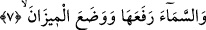

küçülerek ve Allah’a secde ederek sağa sola döner” (en-Nahl, 16/48) âyet-i
kerîmesi’nde açıklandığı gibi ikisinin (güneş ve ay’ın) gölgeleri secde eder. Denilmiştir
ki ağaçların ve yıldızların tesbihleriyle ilgili bir bilgimiz olmadığı gibi secdelerine de
vukufumuz yoktur. Buna, “Yedi gök, yer ve bunlarda bulunan herkes O’nu tesbih
eder. O’nu övgü ile tesbih etmeyen hiç bir şey yoktur. Ne var ki, siz, onların
tesbihini anlamazsınız” (el-İsra’, 17/44) âyet-i kerîmesi şâhidlik eder.
Bu âyet-i kerîme’de gök nimetleri olan güneş ve ay’a karşılık yer nimetlerinden olan
taneli besinler, meyveler, hayvanlar için yaş ve kuru otlar, temel besinler, bitki ve ağaç
türleri zikredilmiştir.
Önce geçen âyetlerdeki cümlelerin birbirine atfedilmeden bırakılmış olması, insanın
şükretmesi gerektiğini tenbih etmek için verilen nimetleri sayıp hatırlamaktır. Nitekim,
“Allah seni fakirlikten sonra zengin, zilletten sonra aziz kıldı, az iken senin nimetlerini
çoğalttı, hiç kimsenin kimseye yapmadığını sana yaptı” sözü de bu kabildendir. “Bitkiler
ve ağaçlar” cümlesinin kendinden önceki cümleye atfedip bağlanması ise karşılıklı
olarak aralarında uygunluk bulunduğu içindir. Zira güneş ve ay, gökyüzü yüksek
cisimlerdir. Bitki ve ağaçlar ise yeryüzünde aşağı durumdadırlar. Her iki halde de en
ufak bir sapma olmadan Allah’ın emrine itâattedirler. Ayrıca her dördü zatları ve
sıfatları itibariyle insan türünden başkadırlar. Ancak gerek şekil, gerek anlam, gerek
tabîat, gerekse isimlendirilme bakımından aralarındaki değişikliği gerçekleştirmek için
isim şeklinde getirilerek düzenlenmiştir.
Burada, eşyanın bilinmesine aracılık eden aklın, rabbânî mârifetlere ve ilâhî
hakikatlere baktığında mahvolup paramparça olacak hale geldiğine ve secde ettiğine de
işâret vardır. Çünkü, keşif ve şühûd yoluyla ilâhî feyizden faydalanmadan kendi istidâd
ve kabiliyeti ile bunları idrak etmeğe gücü yoktur. Ayrıca, kendi yapısı ve mizacının
gücünden ibaret kalan; hayal, vehim ve tabii kuvvet yapraklarıyla süslenen fikir
ağacının secde ettiğine ve kendi mahiyeti itibariyle hakikatleri idrak etmesinin mümkün
olmadığına da dikkat çekilmektedir. Nitekim şöyle söylenmiştir: Akıl ve fikir kâinatın
duvarları çevresinde dolaşıp onu yaratana baktıklarında eridiler. Nasıl erimesinler ki,
ikisi de yaratılmış olup mahlûk ve sonradan olma ile sınırlıdırlar. Sonradan olma bir
yaratığın kadîm ve ezelî olan yaratıcıyı tanıyabilmesi ne mümkündür. Nitekim “Allah’ı
gereği gibi tanımadılar…” (el-En’am, 6/91) buyurulmuştur.
7. Göğü Allah yükseltti ve mîzanı (dengeyi) O koydu.
“Göğü Allah yükseltti.” Yâni, görülüp hissedildiği gibi bulunduğu yer itibariyle onu
yükseltilmiş olarak yarattı. Mânen ve makam itibariyle onu yükseltti. Çünkü onu ilâhî
hükümlerin, infazlarının ve emirlerinin çıktığı, meleklerin de bulunduğu yer yaptı. Bazı